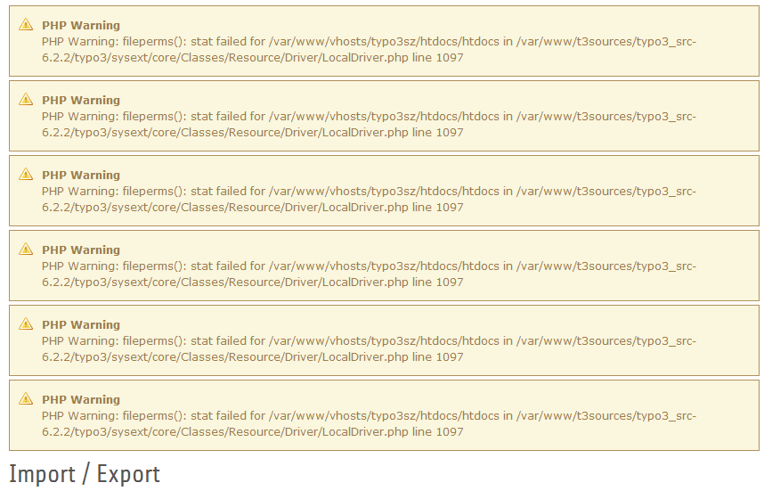

Task #59015
Story #58777: Fixes/Tasks for impexp / distributions
Catch all errors on adding files of sys_files to export
| Status: | Resolved | Start date: | 2014-05-21 | |
|---|---|---|---|---|
| Priority: | Should have | Due date: | ||
| Assigned To: | Marc Bastian Heinrichs | % Done: | 100% |
|
| Category: | Import/Export (T3D) | Spent time: | - | |
| Target version: | - | |||
| TYPO3 Version: | 6.2 | Complexity: | ||
| PHP Version: | Sprint Focus: |
Description
Adding files from sys_file records is not robust enough.
E.g. if there are sys_file records, but no related files anymore, what
could happen for files in /uploads/tx_foo till #58967 is fixed a RuntimeException
is thrown.
Solution: catch all Exceptions thrown from Resources in export_addSysFile
{kind=link}
Associated revisions
[BUGFIX] Catch all errors on adding files of sys_files to export
Adding files from sys_file records is not robust enough. For example
sys_file records could exist for already deleted files. In this case a
RuntimeException is thrown, which is not caught currently.
Solution: catch all Exceptions thrown from Resources in
export_addSysFile and report them to the user.
Resolves: #59015
Releases: master, 6.2
Change-Id: If7ce51a2ae756b43dc30d5545b076310972342f4
Reviewed-on: http://review.typo3.org/30318
Reviewed-by: Frans Saris <franssaris@gmail.com>
Tested-by: Frans Saris <franssaris@gmail.com>
Reviewed-by: Stephan Großberndt <stephan@grossberndt.de>
Reviewed-by: Anja Leichsenring <aleichsenring@ab-softlab.de>
Tested-by: Anja Leichsenring <aleichsenring@ab-softlab.de>
[BUGFIX] Catch all errors on adding files of sys_files to export
Adding files from sys_file records is not robust enough. For example
sys_file records could exist for already deleted files. In this case a
RuntimeException is thrown, which is not caught currently.
Solution: catch all Exceptions thrown from Resources in
export_addSysFile and report them to the user.
Resolves: #59015
Releases: master, 6.2
Change-Id: If7ce51a2ae756b43dc30d5545b076310972342f4
Reviewed-on: http://review.typo3.org/37566
Reviewed-by: Anja Leichsenring <aleichsenring@ab-softlab.de>
Tested-by: Anja Leichsenring <aleichsenring@ab-softlab.de>
History
#1 Updated by Gerrit Code Review about 1 year ago
- Status changed from New to Under Review
Patch set 1 for branch master of project Packages/TYPO3.CMS has been pushed to the review server.
It is available at https://review.typo3.org/30318
#2 Updated by Armin Ruediger Vieweg about 1 year ago
- File 2014-05-22_1124.png added
I've tested it, now I get this warning in ImpExp module:
Core: Error handler (BE): PHP Warning: fileperms(): stat failed for /var/www/vhosts/.../htdocs/htdocs in /var/www/t3sources/typo3_src-6.2.2/typo3/sysext/core/Classes/Resource/Driver/LocalDriver.php line 1097
And for every time I open the ImpExp module again (for root node) another warning appears:

In this example I've opened the module six times. I've also opened it on other pages, then it works. But when I switch back to root, a new warning appears additionally.
#3 Updated by Marc Bastian Heinrichs about 1 year ago
Ok, thx for testing. Perhaps we should prevent php warnings for fileperms...
Could give some details? You are on Win or Linux? What storages are configured?
#4 Updated by Gerrit Code Review about 1 year ago
Patch set 2 for branch master of project Packages/TYPO3.CMS has been pushed to the review server.
It is available at https://review.typo3.org/30318
#5 Updated by Gerrit Code Review 8 months ago
Patch set 3 for branch master of project Packages/TYPO3.CMS has been pushed to the review server.
It is available at http://review.typo3.org/30318
#6 Updated by Gerrit Code Review 5 months ago
Patch set 4 for branch master of project Packages/TYPO3.CMS has been pushed to the review server.
It is available at http://review.typo3.org/30318
#7 Updated by Gerrit Code Review 5 months ago
Patch set 1 for branch TYPO3_6-2 of project Packages/TYPO3.CMS has been pushed to the review server.
It is available at http://review.typo3.org/37566
#8 Updated by Marc Bastian Heinrichs 5 months ago
- Status changed from Under Review to Resolved
- % Done changed from 0 to 100
Applied in changeset 3b86ba556219921a5700217b3c25dedde8d6b0db.